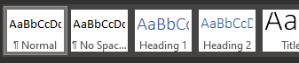
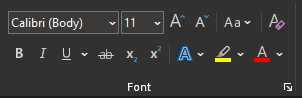
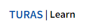
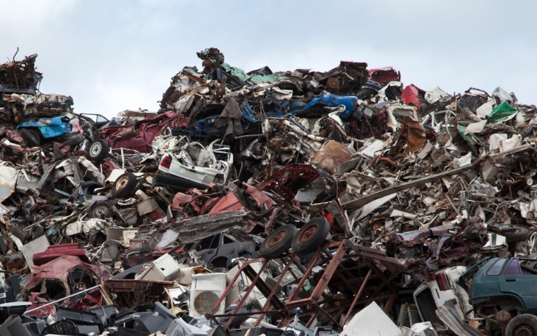

No feedback found for this session
HTML for non-web developers
skills
beginner
HTML
JSON
XML
HTML?
- = HyperText Markup Language
- developed around 1990
- since c. 1993, the standard language for writing web pages
HTML structure
- HTML is based on tags
- tags add information to text
- to make a heading in HTML, we’d take our heading text, and surround it with
h2tags:<h2>This is my heading</h2>
- hundreds of tags in use
But!
- this session isn’t going to teach you loads of tags
- for web developers, yes, do learn them! (also all the css and java that are used to display and style the information in the html)
- but for everyone else - it’s being able to pick out the tag-based structure that’s useful
- family of similar languages (XML, JSON) that operate in a similar way
Why do this?
- HTML is mainly used to write websites
- So why bother with HTML if you don’t?
What makes HTML generically useful?
- tags lend themselves to semantic markup
- Say what an element is, rather than how it should look 
…and not

Where might you find HTML?

(not surprising)
(possibly surprising)
Make some HTML
Task
- Create a text file in Windows Notepad (or other text editor)
- add some text
- save that file with the
.htmlfile extension - open in your web browser
What does it look like?

Images
- we can also put extra information inside the tag itself to control how our HTML works. Images are a nice example. You start with a simple
<img>tag, and then add components. For example, you’ll nearly always supply the web address of your image:
<img src="https://i.imgur.com/OpmMr44.jpg"> 
You can also resize the image using HTML, by adding height/width info to the tag:
<img src="https://i.imgur.com/OpmMr44.jpg" height="300">
And you can play with the alignment, padding, etc etc:
<img src="https://i.imgur.com/OpmMr44.jpg" height="300" ALIGN="left" HSPACE="15" VSPACE="25"/>
(this goes a bit wonky in the quarto we use to build the training pages - definitely worth trying out yourself in your HTML file) ## Tables
Tables are built by using several tags in concert. Say you want to re-build this bit of KIND network archaeology from a couple of years ago:
| Webinar | Date |
|---|---|
| Nov 2022 (R) | 2022-11-16, 2-3pm |
| Dec 2022 (KIND conference) | 2022-12-07, 1-5pm |
You’ll need a few different tags:
-
<table>to start the whole thing off -
<thead>to write the (different looking) header row -
<tbody>to contain the body of the table -
<tr>to describe what should go in a row -
<th>to describe individual values
The trick is that they are nested together, so for a one-cell table with a header you might go like this:
<table><tbody><tr><th>Bit of content</th></tr></tbody></table>
| Bit of content |
|---|
Back to our proper example, following the same idea about nesting:
<table>
<thead>
<tr class="header">
<th align="left">Webinar</th>
<th align="left">Date</th>
</tr>
</thead>
<tbody>
<tr>
<td align="left">Nov 2022 (R)</td>
<td align="left">2022-11-16, 2-3pm</td>
</tr>
<td align="left">Dec 2022 (KIND conference)</td>
<td align="left">2022-12-07, 1-5pm</td>
</tr>
</tbody>
</table>| Webinar | Date |
|---|---|
| Nov 2022 (R) | 2022-11-16, 2-3pm |
| Dec 2022 (KIND conference) | 2022-12-07, 1-5pm |
Practical example: Data munging
- (the hard bit) make/find an HTML version of your document
- Take a lot of links in a document
- Save the Word doc as html and tidy it up
- Open that webpage source using Notepad
- Paste html code into Excel
- Delete the columns you don’t need. (try F5, selecting ‘Special’, then ‘Blanks’, then Ctrl+-)
- Use Text to Columns tool to remove html bits (split on
")
Practical example: parsing HTML to extract data
- you often want to pull data out of HTML-based sources, like webpages. We’d call that parsing HTML. Here’s a mini-example in R:
library(xml2)
"<p>This is some text. This is <b>bold!</b></p>" |>
read_html() |>
xml_text(trim = TRUE) [1] "This is some text. This is bold!"- the advice here is to use a proper tool, rather than trying to dig all the content out of the tags yourself by e.g. finding and replacing
- definitely worth reading this in-depth and entertaining thread about the issue: “You can’t parse [X]HTML with regex”
here::here("skills/data/doc_links.htm") |>
xml2::read_html() |>
xml2::xml_find_all("//@href") |>
xml2::as_list() |>
purrr::flatten() |>
unlist() |>
sample(5) # just a random sample of five to avoid overload[1] "https://573.example.com" "https://738.example.com"
[3] "https://945.example.com" "https://956.example.com"
[5] "https://615.example.com"